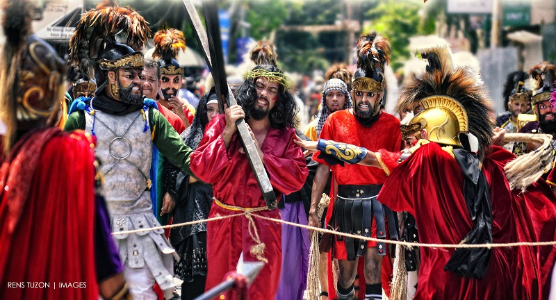

Welcome Kabayan,
to the most tourists spotted places in Marinduque

Moriones Festival
What about "Moriones Festival?"
The Moriones is a lenten festival held annually on Holy Week on the island of Marinduque, Philippines. The "Moriones" are men and women in costumes and masks replicating the garb of biblical Imperial and Royal Roman soldiers as interpreted by locals. The Moriones tradition has inspired the creation of other festivals in the Philippines where cultural practices is turned into street festivals. It is a colorful festival celebrated on the island of Marinduque in the Philippines. The participants use morion masks to depict the Roman soldiers and Syrian mercenaries within the story of the Passion of the Christ. The mask was named after the 16th and 17th century Morion helmet. The Moriones refers to the masked and costumed penitents who march around the town for seven days searching for Longinus. Morions roam the streets in town from Holy Monday to Easter Sunday scaring the kids, or engaging in antics or surprises to draw attention. This is a folk-religious festival that re-enacts the story of Saint Longinus, a Roman centurion who was blind in one eye. The festival is characterized by colorful Roman costumes, painted masks and helmets, and brightly colored tunics.


"Parini na baya sa amin at magsaya sa puso ng Pilipinas"